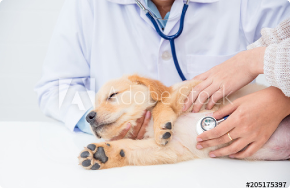

Наша клиника — амбициозный проект с миссией изменить ветеринарную индустрию:
Область в ветеринарии, которая занимается диагностикой Врач поможет Вам оформить
Область в ветеринарии, которая занимается диагностикой Врач поможет Вам оформить ветеринарный паспорт и чипировать Вашего питомца
Область в ветеринарии, которая занимается диагностикой
Врач-терапевт — это универсальный доктор. Именно с этого специалиста начинается любой приём, будь то лечение, профилактика или консультация на такие темы, как особенности выращивания, содержания и кормления питомца!
Наличие сертификатов о пройденном дополнительном образовании
Заинтересованность в развитии и совершенствовании своих знаний в области ветеринарии
Способность выдерживать высокий темп работы и большую нагрузку, внимательность, аккуратность, коммуникабельность, стрессоустойчивость, умение работать в команде
Врач-терапевт — это универсальный доктор. Именно с этого специалиста начинается любой приём, будь то лечение, профилактика или консультация на такие темы, как особенности выращивания, содержания и кормления питомца!
Задачи:
1.Оконченное высшее профильное образование
2.Практический опыт работы от 2-3 лет
3.Любовь к животным и желание им помочь
Условии труда:
1. Оконченное высшее профильное образование
2. Практический опыт работы от 2-3 лет
3. Любовь к животным и желание им помочь
Врач-терапевт — это универсальный доктор. Именно с этого специалиста начинается любой приём, будь то лечение, профилактика или консультация на такие темы, как особенности выращивания, содержания и кормления питомца!
Почему выбирают нас? 
Командный подход
Под крышей нашего центра собраны самые разные специалисты, что создает общую синергию и ведет к наиболее полному уходу за Вашим питомцем.
Инновации и исследования
Под крышей нашего центра собраны самые разные специалисты, что создает общую синергию и ведет к наиболее полному уходу за Вашим питомцем.
Экспертные ветеринары
в каждом направлении
Под крышей нашего центра собраны самые разные специалисты, что создает общую синергию и ведет к наиболее полному уходу за Вашим питомцем. Под крышей нашего центра собраны самые разные специалисты, что создает общую синергию и ведет к наиболее полному.
Возникли вопросы или жалобы?
Оставьте его в форме ниже и наши менеджеры обязательно Вам ответят!


 3.svg)


 2.png)